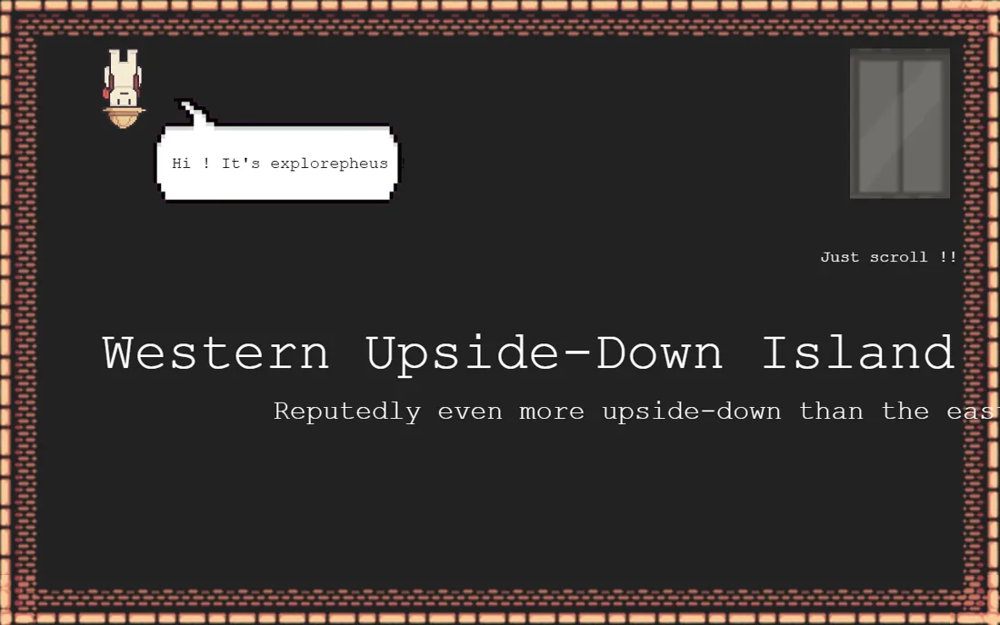

Play in your browser
Nothing to install. It runs right on this page.
My island for the Summer of Making Grand Survey map.
An island where gravity runs backwards, all because of one small mistake.

Long ago, Saint Ditchi was meditating in the forests of the West when a cockroach scared him. He killed it, and it rose again as an angry angel with a curse: if his family ever set foot on the ground, gravity would flip. Generations later, they still live upside down.
Nothing to install. It runs right on this page.
Pixel art, an elevator and an explorer who isn’t from around here.
One island in Summer of Making’s Grand Survey expedition.